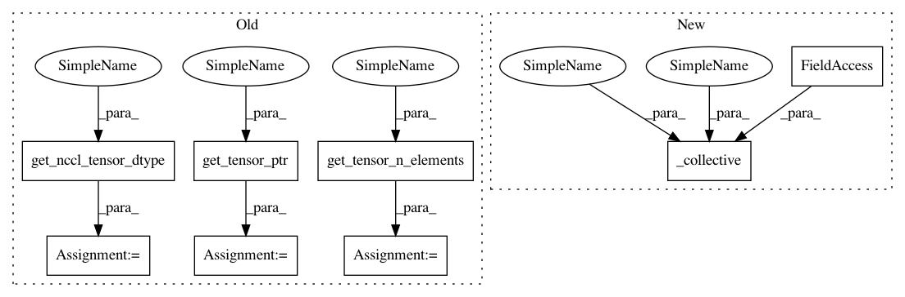

7e52351ae56a5068131d873252ad4f95d134c33d,python/ray/util/collective/collective_group/nccl_collective_group.py,NCCLGroup,broadcast,#NCCLGroup#Any#Any#,212
Before Change
comm = self._get_nccl_collective_communicator()
stream = self._get_cuda_stream()
dtype = nccl_util.get_nccl_tensor_dtype(tensor)
ptr = nccl_util.get_tensor_ptr(tensor)
n_elems = nccl_util.get_tensor_n_elements(tensor)
// in-place broadcast
comm.broadcast(ptr, ptr, n_elems, dtype, broadcast_options.root_rank,
stream.ptr)
After Change
nccl_util.get_nccl_tensor_dtype(input_tensor),
broadcast_options.root_rank, stream.ptr)
self._collective(tensor, tensor, collective_fn)
def allgather(self,
tensor_list,
tensor,
In pattern: SUPERPATTERN
Frequency: 4
Non-data size: 8
Instances
Project Name: ray-project/ray
Commit Name: 7e52351ae56a5068131d873252ad4f95d134c33d
Time: 2021-01-05
Author: zhisbug@users.noreply.github.com
File Name: python/ray/util/collective/collective_group/nccl_collective_group.py
Class Name: NCCLGroup
Method Name: broadcast
Project Name: ray-project/ray
Commit Name: 7e52351ae56a5068131d873252ad4f95d134c33d
Time: 2021-01-05
Author: zhisbug@users.noreply.github.com
File Name: python/ray/util/collective/collective_group/nccl_collective_group.py
Class Name: NCCLGroup
Method Name: reduce
Project Name: ray-project/ray
Commit Name: 7e52351ae56a5068131d873252ad4f95d134c33d
Time: 2021-01-05
Author: zhisbug@users.noreply.github.com
File Name: python/ray/util/collective/collective_group/nccl_collective_group.py
Class Name: NCCLGroup
Method Name: allgather
Project Name: ray-project/ray
Commit Name: 7e52351ae56a5068131d873252ad4f95d134c33d
Time: 2021-01-05
Author: zhisbug@users.noreply.github.com
File Name: python/ray/util/collective/collective_group/nccl_collective_group.py
Class Name: NCCLGroup
Method Name: allreduce